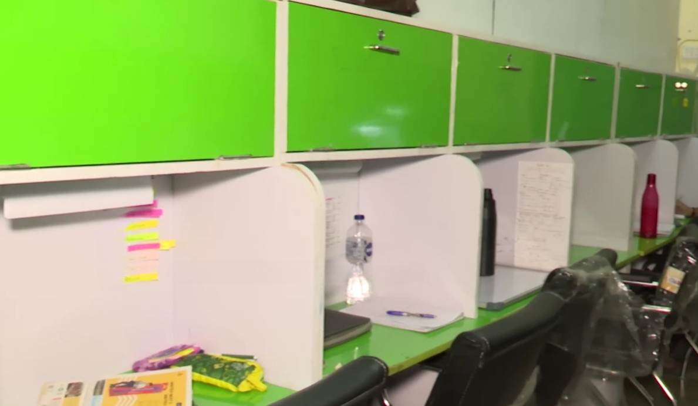
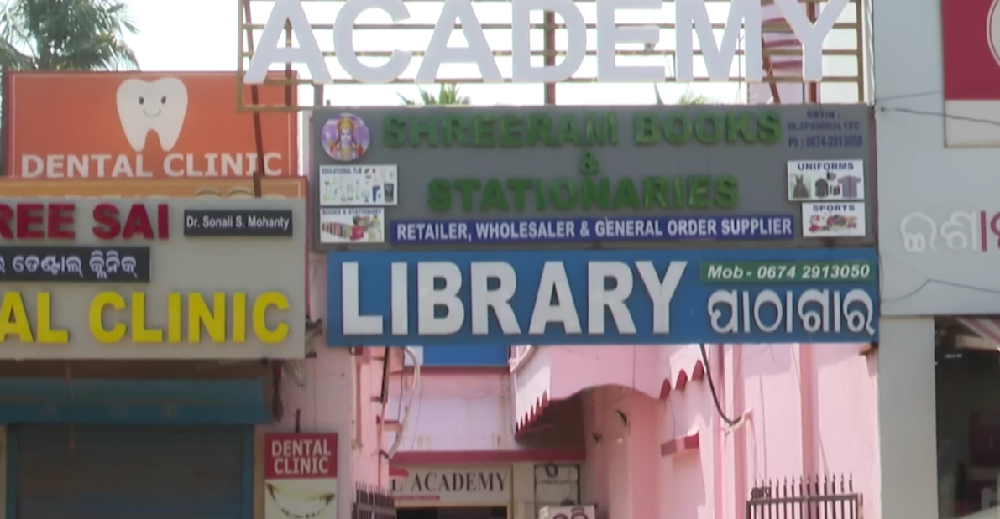
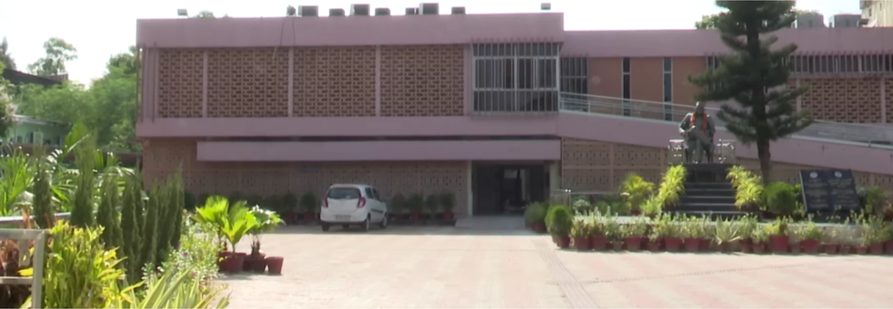

- What to Expect From a Good Self-Study Library in BBSR
- Vidyarthi Reading Hub — Saheed Nagar (Branch 3)
- Sai Foresight Self Study Centre — Jaydev Vihar, Acharya Vihar
- Shiddat Library — Baramunda Ruchika Market (24 hours)
- Three More Worth Knowing
- The Chair Problem Nobody Talks About
- Quick Comparison Table
- What to Ask Before You Pay for a Month
- The Real Cost Calculation for Exam Aspirants
What to Expect From a Good Self-Study Library in BBSR
Bhubaneswar has a serious exam preparation culture. UPSC, OPSC, SSC, Banking, CSIR-UGC NET, NEET, JEE — on any given morning, thousands of students in this city are trying to get 8–10 productive hours in. The hostel room is too distracting. The college library closes too early. Home has too many interruptions. A paid self-study library is, for many BBSR aspirants, the single most important infrastructure decision of their exam preparation year.
The problem is that not all libraries deliver what they promise. "AC library" in some BBSR reading rooms means two wall-mounted units installed three years ago that go off at noon because of the electricity bill. "WiFi" sometimes means one router on the ground floor that doesn't reach the upper seating. And "peaceful environment" can evaporate when wooden cabin doors slam every 90 seconds.
✅ Standard Inclusions (₹800–1,500/month)
| Personal cubicle | Dedicated light + socket |
| Locker | Usually included |
| Purified water | All listed libraries |
| Clean washrooms | Separate M/F at better ones |
| AC environment | Confirm all-day hours |
⚠️ Often Extra / Often Misrepresented
| WiFi | Paid add-on at some (check) |
| Whiteboard | Extra at Vidyarthi Hub |
| Discussion room | Only Sai Foresight of the top 3 |
| Locker upgrade | May be chargeable |
| 24-hour access | Only Shiddat Library |
1. Vidyarthi Reading Hub (Branch 3) — Saheed Nagar
Vidyarthi Reading Hub — Saheed Nagar, Branch 3
7 Days
The Vidyarthi Reading Hub is the most recognisable name in the Bhubaneswar paid library circuit. Branch 3 in Saheed Nagar is the one consistently recommended for the Saheed Nagar–Satya Nagar–Acharya Vihar corridor. The building is in the A/9 lane adjacent to Aangan Restaurant in Saheed Nagar — 3rd floor of the Acadjee Pvt. Ltd. building. When I visited at 9 AM on a weekday, the room was already 80% occupied, almost entirely by students with printed notes and highlighters rather than laptop browsers. The atmosphere is serious.
This branch specifically targets CSIR-UGC NET, SSC, UPSC, and Banking aspirants — the signage inside makes that explicit, and the atmosphere matches it.
- AC runs all-day — not a morning-only situation
- Spacious desk area per cubicle
- Washroom cleanliness actively maintained
- Purified water, visible sanitation upkeep
- Manager Ashutosh Bhai is hands-on and responsive
- Safe for women — CCTV coverage confirmed
- Open 7 days including Sunday till 10 PM
- ₹1,300/month is top-end of BBSR library rates
- WiFi is a paid add-on on top of seat fee
- Whiteboard is also extra — confirm before budgeting
- No on-site food or discussion room
2. Sai Foresight Self Study Centre — Jaydev Vihar, Acharya Vihar
Sai Foresight Self Study Centre & Library — Acharya Vihar
Sun 9AM–7PM
Sai Foresight is the library that solves the AC price problem by giving you a real choice. Unlike most BBSR libraries where "AC or non-AC" is just a different floor with one split unit, Sai Foresight has genuinely 2 dedicated AC rooms and 2 dedicated non-AC rooms — around 50+ tables across all four. The price difference is significant and reflects actual infrastructure.

If you're studying from November to February, the non-AC room at ₹600–800/month is perfectly comfortable and saves you ₹300–400/month. If you're preparing through April to August, the AC room is worth every rupee. No other top-rated library in BBSR gives you this flexibility.
The location is in the Acharya Vihar–Jaydev Vihar corridor, behind the TTD Kalyan Mandap and beside GIET. This places it in the densest coaching and study hub zone in BBSR — walkable from Jaydev Vihar Square, Acharya Vihar Square, and the Vani Vihar–Biju Pattnaik College Road cluster where most OPSC and competitive exam coaching centres are concentrated.

- Real AC/non-AC choice — not a gimmick
- WiFi included in both room types
- Locker system — leave books between sessions
- Discussion room — rare at this price point in BBSR
- On-site snacks, kitchen for food reheating
- Garden for between-session mental reset
- Management values students — noted across reviews
- Best value seat in BBSR: non-AC at ₹600–800/month
- Wooden cabin doors — "disgusting noise" per one reviewer
- Spring chairs in some cabins cause back pain on 8hr sessions
- Closes at 7 PM on Sundays (vs. 8:30 PM weekdays)
- Not open 24 hours — no late-night exam-eve option
3. Shiddat Library — Baramunda Ruchika Market (Open 24 Hours)
Shiddat Library — Near Indian Bank ATM, Ruchika Market, Baramunda
Shiddat Library has the highest review count of any dedicated study library in this article — 456 reviews at 4.9/5 — and the feature that no other BBSR library offers consistently: it is genuinely open 24 hours a day, 7 days a week. Not "open till midnight." Not "open early at 5 AM." Twenty-four hours.
For exam aspirants, this is not a luxury. The week before OPSC prelims, SSC CGL, or IBPS PO is when students need to pull 4 AM revision sessions or arrive at 5 AM to get peak focus before the noise of the day starts. Every other library on this list opens at 6:30–8 AM. Shiddat Library is open when they arrive.

🕐 Why 24-Hour Access Matters for Exam Aspirants
- No morning seat scramble — No anxiety about arriving at 7 AM and finding your preferred spot taken. At 5 AM, the room is nearly empty.
- Pre-exam all-nighters — The day before a major exam, many aspirants don't sleep. A maintained, AC, WiFi study environment at 2 AM is invaluable and exists nowhere else in BBSR at this price.
- Working aspirants — If you're also doing a job and can only study from 10 PM to 2 AM, Shiddat Library is the only structured study environment that accommodates you.
- No end-of-session pressure — When other libraries begin their 30-minute closing routines at 8:30 PM, you're still in the middle of your topic. Shiddat doesn't do this to you.
- Night package available — Ask specifically about the overnight package rate. Day-only members at ₹700–900/month don't get 24-hour access automatically; confirm the rate for full 24-hour access.
The location is in Ruchika Market, Baramunda Housing Board Colony — near the Indian Bank ATM and the Baramunda Fire Station. For students coming from outside Bhubaneswar and staying in PGs around the Baramunda–Patrapada–Aiginia belt, this is the most accessible library zone in the city — 5 minutes by auto from Baramunda ISBT.
- 24 hours, 7 days — genuinely unmatched in BBSR
- Highest review count of any study library on this list (456)
- WiFi included in standard fee
- Consistently described as "calm," "serene," "peaceful"
- Staff praised for being courteous and problem-solving
- Accessible from Baramunda ISBT in 5-minute auto
- No morning rush anxiety for seats
- Cubicle size not confirmed in same depth as others
- Chair quality not specifically reviewed
- No discussion room mentioned in reviews
- No on-site food mentioned — plan accordingly
Three More Worth Knowing
The article covers the top 3 in detail, but these three deserve a mention for specific locations and situations:
Opens at 6 AM. 4 washrooms (2M + 2F) — best washroom infrastructure of any library covered here. Personal cubicles, charging points, good parking. Hours: 6 AM–10 PM (till 2 PM Sunday). Phone: +91 70088 16314. Best option for students in the Chandrasekharpur–CDA–Niladri Vihar belt.
Block N5, IRC Village. Monthly: ₹850 and ₹1,200. Full AC and WiFi. Hours: 7:30 AM–9 PM (closes 4 PM on Sundays — a significant limitation for working aspirants whose heavy study day is Sunday). Confirmed fully AC throughout.
Near Delta Square, Baramunda. 24-hour WiFi. Aesthetic interior, spacious cubicles, large parking area. Open 24 hours Monday–Saturday, 9 AM–9 PM Sundays. Phone: +91 97764 62222. Premium alternative to Shiddat if you're in the Baramunda zone and want a newer, more polished setup.
The Chair Problem Nobody Talks About
Library brochures never mention chair quality. But the chair will determine how many hours you can actually study, and most paid libraries in Bhubaneswar have not solved this.
If you're preparing for a major exam and planning 8–10 hours daily: ask to see the chair before paying. Ask if you can bring your own back support cushion (most libraries will say yes). And don't sign a 3-month commitment before you've done a 4-hour trial session and confirmed your back doesn't protest.
Quick Comparison Table
| Library | Zone | Monthly Fee | AC | WiFi | Hours | Best For |
|---|---|---|---|---|---|---|
| Vidyarthi Hub 3 | Saheed Nagar | ₹900 half / ₹1,300 full | Full AC ✅ | Paid add-on ⚠️ | 7AM–10PM daily | UPSC/OPSC/CSIR in Saheed Nagar belt |
| Sai Foresight | Acharya Vihar | ₹600–800 (non-AC) ₹1,000–1,200 (AC) | 2 AC + 2 non-AC ✅ | Included ✅ | 8:30AM–8:30PM (Mon–Sat) | Discussion room, AC/non-AC choice |
| Shiddat Library | Baramunda | ₹700–900 | AC ✅ | Included ✅ | 24 Hours 7 Days ✅ | 24-hour access, Baramunda zone |
| Shree Ram Library | Chandrasekharpur | Confirm on visit | AC cabins ✅ | Confirm | 6AM–10PM (till 2PM Sun) | CDA–Niladri Vihar area |
| KACS Library | Baramunda Soubhagya Nagar | Confirm on visit | AC ✅ | 24-hr WiFi ✅ | 24 hrs Mon–Sat, 9AM–9PM Sun | Baramunda premium alternative |
What to Ask Before You Pay for a Month
These five questions will save you from wasting ₹800–1,300 on the wrong library:
-
1What time does the AC go on and off? The answer should be: "It runs the whole session." If they say "we switch it on when needed" or pause before answering, that is a red flag. The afternoon hours (1–4 PM) are when budget libraries turn off AC to save on the electricity bill. Ask specifically about this window.
-
2Is WiFi included or extra? At Vidyarthi Reading Hub, it's extra — confirm the actual charge before budgeting. At Sai Foresight and Shiddat Library, it's included. The difference of ₹100–200/month for WiFi matters if you're already paying ₹1,300 for the seat.
-
3Can I see the chair I'll be sitting on? Specifically ask to sit in it for five minutes. Check the back support height, the arm rest angle, and whether the seat cushion has any actual firmness left. Your lumbar spine will decide how many hours you actually study each day.
-
4Is there a trial day or trial session available? Several libraries offer a one-day trial for ₹50–100. Shiddat Library and Sai Foresight are both open to trial visits. Always use this option before committing monthly. A 4-hour session will tell you more than any review.
-
5What's the Sunday/holiday schedule? Sai Foresight closes at 7 PM on Sundays. The Vidyarthi Hub ID Market branch closes at 4 PM on Sundays. Shree Ram Library closes at 2 PM on Sundays. If Sunday is your heaviest study day — which it often is for working aspirants — these hours are a dealbreaker or a non-issue, depending on what you need.
The Real Cost Calculation for Exam Aspirants
If you're 8 months from an exam and serious about 8-hour daily sessions, here is the honest maths for the three main options:
(Non-AC, Nov–Feb)
(24-hr AC + WiFi)
(Full-day AC seat)
The cheapest option on this list works out to ₹23 per productive study day. A chai at the stall downstairs costs ₹15. The economics of a paid study library make complete sense for anyone serious about exam preparation. The question is just matching the library to your location, schedule, and budget: Vidyarthi Hub 3 for the Saheed Nagar zone and serious UPSC focus. Sai Foresight for the Acharya Vihar coaching cluster and the best value non-AC winter seat. Shiddat Library if 24-hour access is non-negotiable.
All fees, operating hours, and facility conditions were personally verified on March 2, 2026. Monthly fee ranges may change at any library's discretion — always confirm the current rate before paying. A one-day trial session is available at most of these libraries and is strongly recommended before a monthly or quarterly commitment.